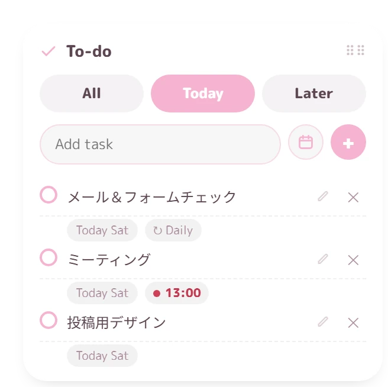
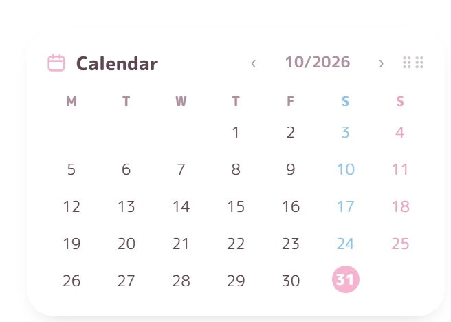
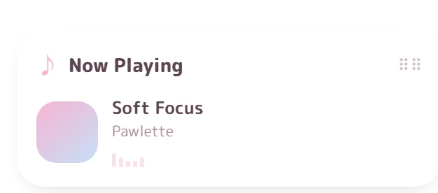
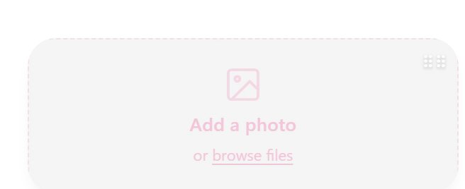

Pawletteについて
デザイナーがつくった、作業画面の横に置いて使う縦型ウィジェットアプリ。
コンセプト
Pawletteは「クリエイターのデスクトップを、かわいく快適に」をテーマにした、Windows用の縦型デスクトップウィジェットアプリです。
制作者は、ふだんデザインの仕事をしているデザイナーです。自分自身が作業中に「横に置いておけるかわいい道具がほしい」と感じたことから、Pawletteは生まれました。
細長い画面に、To-doやタイマー、カレンダー、メモなどのウィジェットを並べて、作業の管理と、見ていて気分が上がるかわいさを両立することを目指しています。
デザイナーがつくった
色や余白、文字の大きさまで、毎日眺めても心地よいデザインにこだわりました。
作業画面の横に置ける
縦に細長い形なので、横に広く使うソフトと並べても作業スペースをじゃましにくい設計です。
かわいいと便利を両立
やることの管理や時間の記録を、かわいい見た目のまま続けられます。
主な機能
各機能の横に「利用できます」「確認・審査中」の表示を付けています。
-

To-do 利用できます
All／Today／Laterの表示切り替えで、今日のタスクも先のタスクも管理できます。日付・繰り返し（Daily）・時刻の設定に対応しています。
-

Calendar 利用できます
月表示のカレンダーで、今日の日付や曜日をひと目で確認できます。
-

Timer 利用できます
PomodoroとSimpleの2つのモード。Pomodoroでは作業時間と休憩時間を設定できます。
-

Work Log 利用できます
作業名を設定して、作業時間と休憩時間を記録できます。Set／Running／Dataのタブで操作します。
-

Memo 利用できます
テキストのメモと、手描きのメモを切り替えて使えます。
-

Clock 利用できます
大きな数字で見やすい時計です。
-

Music／Now Playing 利用できます
再生中の曲名やアーティスト名を表示します。
Windowsのメディア再生情報（システムのメディアコントロール）を通じて、再生中の曲名・アーティスト名などを表示します。対応するかどうかは、再生アプリ側がWindowsにその情報を提供しているかによります（特定のアプリでの動作は保証しません）。
-

Photo 利用できます
お気に入りの画像を飾れるウィジェットです。
-

Healing Scene 利用できます
眺めてほっとできる、癒しのシーンを表示するウィジェットです。
-
Dress-up（着せ替え） 利用できます
Pawletteの見た目を着せ替えて、好みの雰囲気にカスタマイズできます。スタイル（Milky Soft／Sugar Glass／Shimmer Metal）と、カラー（Pink／Mint／Purple／Sky／Yellow／Beige／Gray／White の8色）を選べ、Milky Softでは自分で色を組み合わせるカスタムカラーも使えます。
-
ShareCard 利用できます
Share Studioで、Pawletteの見た目を1200×900（4:3）のカード画像として作り、PNGで保存できます。背景には、お好きな画像（PNG／JPG／WebP／GIF）も使えます。アプリ版では、動くGIF（GIF Loop）の保存にも対応します。「X Open」ボタンは、ご自身のブラウザでXの投稿画面を開くだけで、画像は自動では添付されません。
-
Google Calendar連携 確認・審査中
任意の機能です。現在配布中のv1.1.2には含まれていません。次回アップデートでの提供に向けて、Googleの確認・審査を進めています。詳しくは下記の説明をご覧ください。
Google Calendar連携について
確認・審査中Google Calendar連携は任意の機能です。現在配布中のv1.1.2には含まれていません。次回アップデートでの提供に向けて、Googleの確認・審査を進めており、審査用の候補版ではこの機能を実装しています。一般の利用者への提供時期は、審査の完了後にご案内します。連携を許可した場合の取り扱いは、以下のとおりです（詳しくはプライバシーポリシーをご覧ください）。
- 連携は任意か
- 任意です。連携しなくても、ほかのすべての機能をそのまま使えます。
- アクセスするデータ
- Pawletteで作った予定の題名・日付・時刻（メモ・カテゴリ・色は送りません）と、ご自身のメイン（primary）カレンダーの予定の表示用情報（題名・日時・種類・公開範囲・ご自身の出席状況・予定へのリンク）。説明や場所、参加者のメールアドレスは取得しません。
OAuthスコープ：calendar.app.created（Pawlette専用カレンダーの作成と、その上の予定の管理）、calendar.events.owned.readonly（ご自身のメイン（primary）カレンダーの予定の読み取り専用の参照） - 使用する目的
- ①Pawletteの予定を、Google上のPawlette専用カレンダーに同期するため ②ご自身のGoogleの予定を、Pawletteの月間カレンダーに重ねて表示するため
- 読み取りのみか
- ご自身のGoogleの予定は読み取り専用です。書き込み（作成・更新・削除）は、Pawletteが作った専用カレンダーに限ります。メイン（primary）カレンダーなど、ほかのカレンダーは変更しません。
- 保存場所
- すべてご自身のパソコンの中だけです（運営者のサーバーはありません）。認証情報はWindowsの暗号化機能で暗号化して保存し、予定の表示用情報と同期の記録も、パソコン内に保存します。
- 保存期間
- 連携を解除するまで保存し、解除すると削除します。
- 第三者提供
- 第三者への提供・販売・広告への利用はなく、生成AIの学習にも使いません。Googleとの通信（認証・Calendar API）以外に、Googleのデータを外部へ送ることはありません。
- 連携の解除方法
- 設定の「Google Calendar」で「連携解除（Disconnect）」を選びます。Googleにアクセス権の取り消しを要求し、パソコン内のGoogle関連のデータを削除します。
Googleアカウント側でも、Googleアカウントの「セキュリティ」設定にある、アカウントにアクセスできるサードパーティ製アプリの一覧から、アクセス権を削除できます。 - 保存データの削除方法
- 連携解除で、パソコン内の認証情報・同期の記録・表示用情報を削除します。アンインストール後にデータが残る場合は、
%APPDATA%\pawlette\googleフォルダを削除してください。Google上のPawlette専用カレンダーと、作成された予定は残ります（不要な場合はGoogleカレンダーで削除してください）。
PawletteはGoogleが提供・承認するアプリではありません。Google CalendarはGoogle LLCの商標です。
あわせてプライバシーポリシー（Googleユーザーデータの取り扱い）もご覧ください。
ご不明な点やご質問は、お気軽にお問い合わせください。